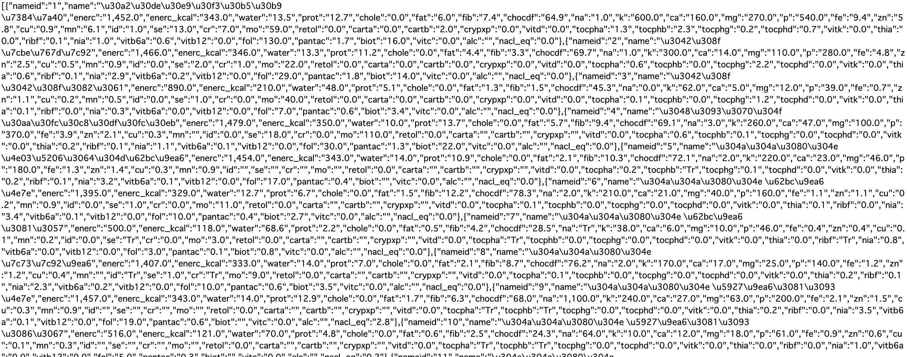

食材に含まれている栄養素を検索し、JSON形式で取得可能。
sheetDBを使ってAPI化をしたため、詳しい取得方法はsheetDBの公式ドキュメントを参照
sheetDB公式ドキュメント全てのデータを取得する場合https://sheetdb.io/api/v1/ouigi8rcne5wmを検索
条件検索する場合"/search"を使用する
例:https://sheetdb.io/api/v1/ouigi8rcne5wm/search?nameid=6 (nameidの値が6のものを取得)